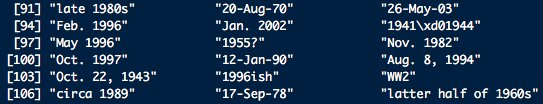
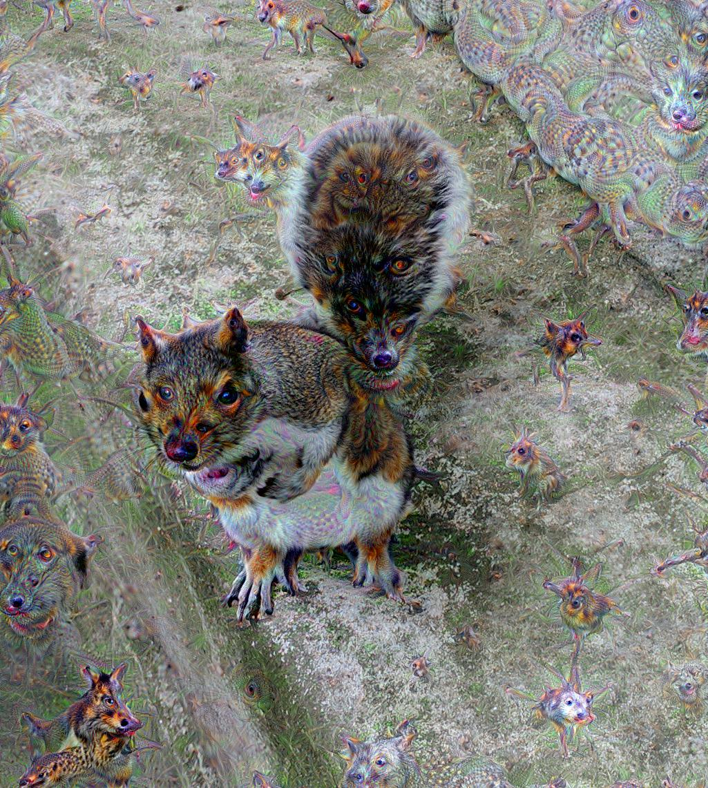
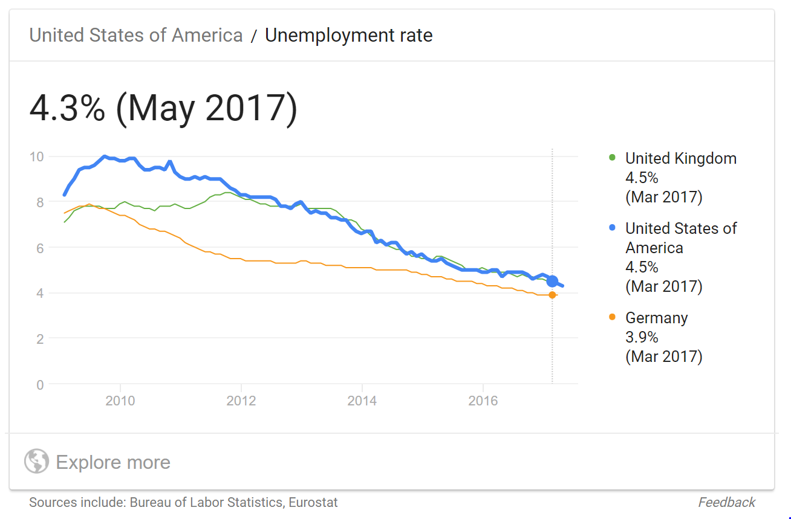
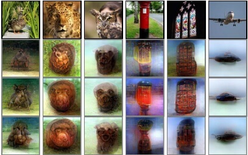

Einführung in Künstliche Intelligenz
Teil 1
Was ist Intelligenz?
Wie definiert ihr eine intelligente Maschine?
Was kann ein Kriterium sein, ob eine Maschine denken kann?
Diskutiert in Gruppen und einigt euch auf eine gemeinsame Definition
10 Minuten Zeit, dann Ergebnisse sammeln
Ergebnisse
- Team 1:
- Selbständige Entscheidung, z.B. selbstfahrendes Auto
- Bewusstsein
- Team 2:
- Lernfähig, über das initiale Training
- Selbständige Entscheidung
- Situationen oder Dinge bewerten (muss nicht moralisch sein)
- Team 3:
- Nicht: stumpfes Regelwerk, wenn dann Regeln
- nicht deterministisch, nicht immer nachvollziehbar
- es wirkt intelligent
- lernen, reflektieren, flexibel, allgemein
- Team 4:
- Abstraktionsfähigkeit von einem bekannten in einen unbekannten Bereich
- Erklärungsfähigkeit, strategisches Denken
Possible Definition
An artificial intelligence is a system that can learn how to learn, or in other words a series of instructions (an algorithm) that allows computers to write their own algorithms without being explicitly programmed for.
https://medium.com/cyber-tales/artificial-intelligence-what-it-is-and-why-now-4e4431942623
Oder: Eine Maschine, die eine gerechte Gerichtsverhandlung führen kann
Oder: Maschine kann einen Menschen zu einem gesellschaftsfähigen Menschen erziehen
Oder: Ein System, das jedes Datumsformat versteht
https://twitter.com/brookLYNevery1/status/954368989181902848?s=03
Oder: Ein selbstfahrendes Fahrzeug

Ist ein Schachprogramm intelligent?
Hier reicht stumpfes durchrechnen, um jeden Menschen zu besiegen
Das hat nichts mit dem zu tun, was Menschen machen
Aber vom Ergebnis ist die Maschine nicht als solche zu erkennen
Reicht das?
Schwache KI (künstliche Intelligenz)
Hypothese: es kommt darauf an, ob man das Ergebnis von dem eines Menschen unterscheiden kann
So ist auch der Turing Test definiert
Nach den Forderungen der schwachen KI wäre ein Schachprogramm intelligent, obwohl das was es tut relativ stumpf ist
und (sehr wahrscheinlich) nicht dem ähnelt was wir Menschen tun
Schachprogramme haben Menschen überwunden weil

Cray X-MP
Supercomputer (1982)

Titan 5 im Gamer PC (2017)
Neuerdings haben wir allerdings auch
- Schlauere Strategien (Programme)
- Sehr große Datenmengen
 https://twitter.com/adriancolyer/status/974689295909957632
https://twitter.com/adriancolyer/status/974689295909957632
Starke KI
Hypothese: Maschinen sind nur dann intelligent, wenn sie etwas ähnliches macht wie ein Mensch
Turing
Vater der modernen Informatik
Wenn man eine intelligente Maschine sieht, stellt man diese Frage nicht mehr
Sie macht genau so viel Sinn, wie zu fragen, ob ein anderer Mensch auch intelligent ist
Is a creative process just applying a certain style to reality?
 =>
=>
Might dreaming or hallucinating just be partial brain shut down? 
Teil 2
Gefahren und Chancen
Jobs

Zalando streicht 250 Stellen in der Marketingabteilung am Unternehmensstandort Berlin. Werbe-E-Mails sollen in Zukunft verstärkt von Algorithmen oder Künstlicher Intelligenz verschickt werden.
"Wir gehen davon aus, dass Marketing in Zukunft noch datenbasierter sein muss. Dafür brauchen wir einen höheren Anteil an Entwicklern und Datenanalysten", sagt Rubin Ritter, Co-Chef von Zalando, gegenüber der FAZ.
Hier haben wir sogar zwei Fragestellungen
- Wollen wir dieses Arbeitsplätze erhalten?
- Was sagt das DSGVO dazu?
Werden auch Models arbeitlos?
Nur zwei dieser Bilder sind echte Fotos
https://twitter.com/goodfellow_ian/status/918900712901197824
Die anderen sind mit Neuronalen Netzwerken generiert

Salesclerks going unemployed?
Minimal information sufficient for value prop

Und obwohl bereits viele Jobs weggefallen sind
Dystopie
Machen wir alles nur weil es geht?
Welche Arbeit wollen wir weiterhin machen?
Welche Information wollen wir nutzen? Wer bestimmt welche Information genutzt werden darf?
Soll der Mensch das Maß der Dinge sein? Soll alles an seinem Nutzen ausgerichtet werden?
Müssen wir uns vor der Unterjochung durch Machinen fürchten?
Können Maschinen Gedanken lesen?
Research team effectively reads minds by using AI techniques to reconstruct images seen by volunteers via fMRI scans of their brains.
Ethik
https://www.technologyreview.com/s/610456/a-startup-is-pitching-a-mind-uploading-service-that-is-100-percent-fatal/
https://www.heise.de/newsticker/meldung/Gehirn-Backup-per-Sterbehilfe-Start-up-will-Hirnkonservierung-fuer-spaeteres-Wiederaufleben-anbieten-3996411.html
I, Robot: 11% Is More Than Enough: Save The Girl
Wenn eine Maschine töten muss
Was passiert in Situation in denen ein tötlicher Unfall nicht zu vermeiden ist?
Wen soll ein selbstfahrendes Fahrzeug opfern?
Ethik-Kommission zum autonomen Fahren lehnt eine Abwägung zum Wert von Menschen ab ( http://www.taz.de/Autonomes-Fahren-und-seine-Hindernisse/!5470265/)
Aber würdet ihr ein Auto fahren, dass euch selbst opfern würde? Halten Hersteller das ein?
Moral Machine
Muss man wieder Kant lesen? https://de.wikipedia.org/wiki/Kritik_der_praktischen_Vernunft
Übung: Visionen für KI
Erstellt Visionen einer durch KI geprägten Zukunft
- Tut euch in Gruppen zusammen
- Erstellt 3 positive und 3 negative Visionen an die ihr persönlich für möglich haltet
- Haltet die Visionen als Skizzen fest
Als Abschluss stellen wir Visionen zur Diskussion vor
15 Minuten